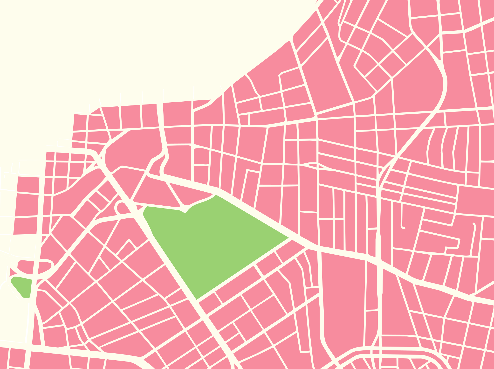

A
Bom Fim
- Mais Art
- Quati
- Uai Why
- Brasco e Bancaberta (quase no mesmo ponto)
- Pastel com Borda
- Alameda Bom Fim
- Casa de Pelotas
- Vintage Lab
- Brechó Rheaps
- Brique da Redenção

01 — Pontos do circuito
32 pontos
Nenhum ponto com esses filtros.
Benefícios com bebida alcoólica valem apenas para maiores de 18 anos.
02 — Trilhas sugeridas
Para ir de parada em parada a partir do parque. Siga a ordem ou monte o seu caminho.
A
B
C
D